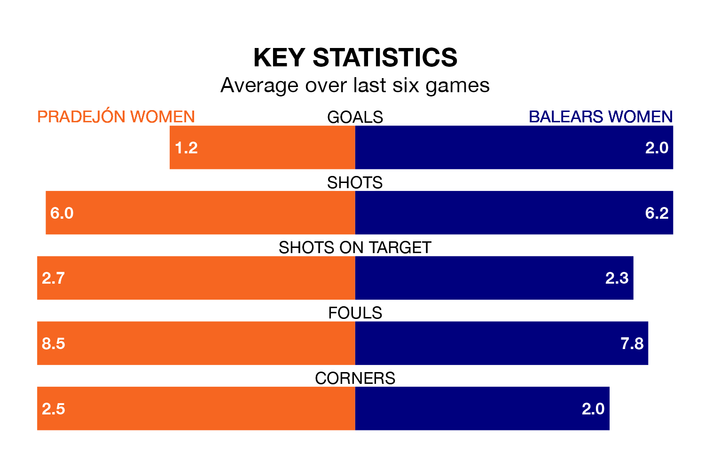

Pradejón Women host Balears Women in Sunday's early match looking to bounce back from defeat last time out in Segunda Federación Femenina.
Pradejón, who sit zero in the league after 17 games, fell to a 1-2 away defeat to Athletic Club III Women on January 21.
They face a Balears side who also lost their last match, a 2-1 defeat to Zaragoza Women, and who sit second in the table.
With 37 goals in 17 games so far this season, Balears are the league's highest scorers with 2.2 goals per game. And they are conceding fewer than average, letting in 19 goals at a rate of 1.1 per game.
Pradejón are also above average scorers, with 1.4 goals per game, compared to a league average of 1.3. They have conceded 1.2 goals per game.
The hosts are in mixed form in Segunda Federación Femenina, with two wins and two draws from their last six games.
With four wins and two losses over that period, the away team's form is better – they have taken 12 points from 18, compared to Pradejón's eight.
Updated: 09:07 (UTC), 24/01/24